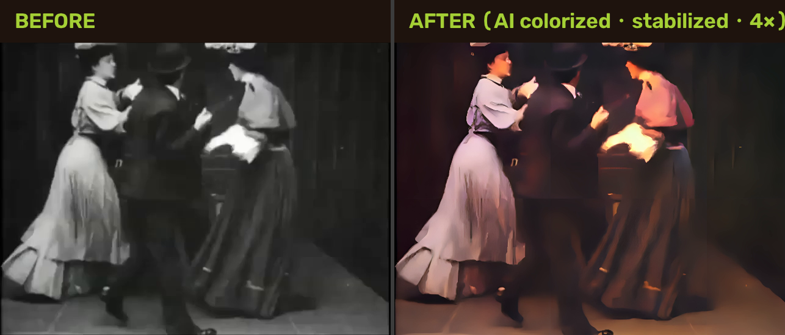
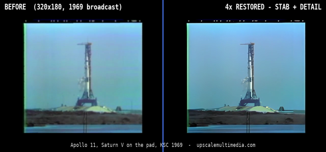
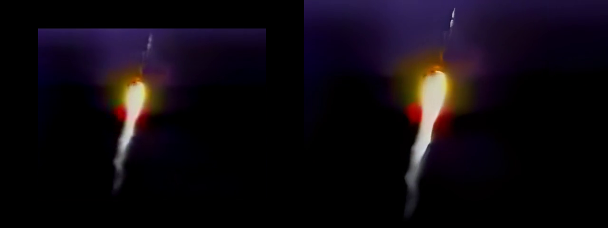

See the difference
Tap a sample to play the before/after clip — it loops until you hit Stop.





Demo footage: public domain (Prelinger Archives, archive.org, NASA). Every delivery includes before/after proof frames like these.
How it works
- Send the file. Any format — MP4, MOV, MKV, AVI, camcorder MTS. Link via Google Drive, Dropbox or WeTransfer. Up to 20 GB.
- Free preview. We restore a short sample and show you a before/after before you commit to the full job.
- Full restore. 4× upscale + AI denoise + deinterlacing (VHS/DVD). Audio preserved and in sync.
- Delivery. Private link to your restored video + proof frames. Source copy deleted after delivery.
Pricing — per job, not per minute
Basic
Up to 1 minute · 4× upscale · AI denoise · before/after proof · 24h delivery
Standard
Up to 5 minutes · everything in Basic · deinterlacing · 3 proof frames · 24h delivery · 2 revisions
Premium
Up to 30 minutes · face-enhancement pass for people-focused footage · per-scene proof · 48h delivery · 3 revisions
Usually in your inbox within 24 hours · Rush +50% · extra footage +$90/5 min · B&W → color add-on +$25/min · face-enhancement pass +$40/min · AI audio enhancement (hiss/hum removal, speech preserved) +$20/min · commercial license on request.
Questions
How big can the result be?
4× the source resolution: 480p → 1920p, 720p → ≈2.9K. Perfect for family archives, e-commerce reels, and any clip outgrown by modern screens.
Can it fix damaged tape or dropouts?
We recover detail, noise and softness from what exists in the file. Truly lost frames are limited — after a free preview we'll tell you honestly what's recoverable.
Where is my video processed?
On our own private hardware in the EU. No third-party APIs, no US cloud. We can confirm deletion of your source file after delivery.
What software / model do you use?
Real-ESRGAN (x4) for the 4× upscale + denoise, DDColor (ICCV 2023) for black-and-white colorization with temporal color-consistency smoothing, ffmpeg vidstab for stabilization, yadif for VHS/DVD deinterlacing, CodeFormer as a face-dedicated enhancement pass on the Premium tier, and our hybrid AI denoiser — DeepFilterNet 3 (NVIDIA, on our GPUs) layered with low-band + speech preservation — for the audio-enhancement option. All run on our own NVIDIA RTX GPUs — batch-processed per job, fast for SD sources (~realtime).
Will colors look right in a 100-year-old film?
Yes — the colorizer infers plausible period colors from context (fabrics, lighting, architecture) rather than slapping a modern palette on, and we smooth the grade across the whole clip so clothing stays a consistent color. You judge it on the free preview; if a look isn't working we'll adjust the grade.
What do I need to send?
A cloud link to the original file and anything you specifically want preserved (a scene, on-screen text, a color look).
Ready when you are
Send us your clip. Free 10-second preview before you pay.
Start a restoration